Benjamin Brown
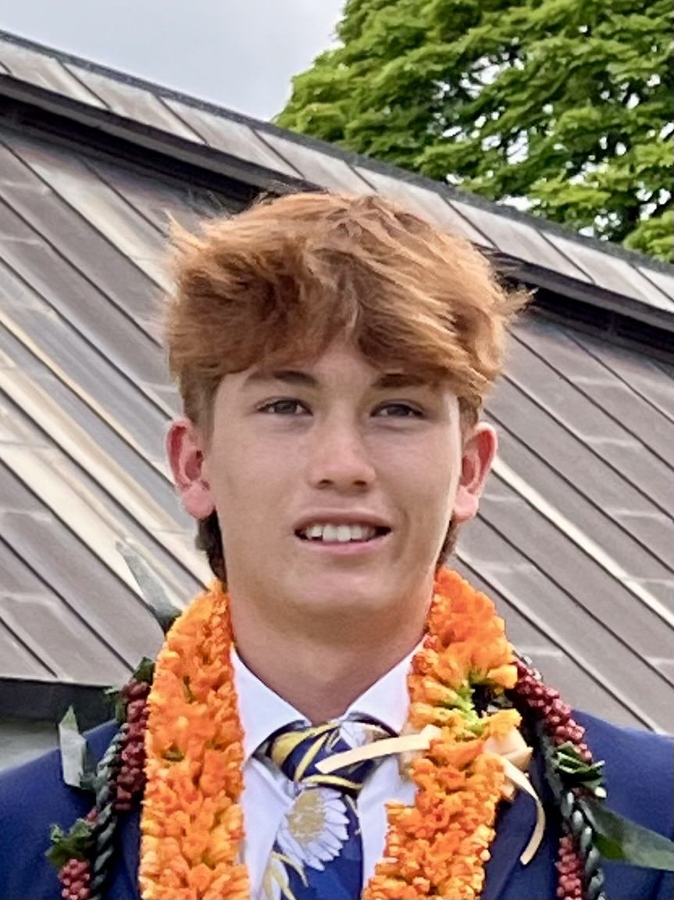
Aloha, I'm Ben, an engineering student at Harvey Mudd College with an emphasis in environmental analysis. I care about building things holistically, from circuit design and mechanical prototyping to software and real-world deployment, I want my work to have a positive impact. My interests are in ocean systems, climate resilience, and renewable energy.
Growing up in Kailua, Hawai'i gave me an early relationship with nature. Surfing, hiking, and running are part of how I grew up. That connection is why I gravitate toward projects that don't just work in a lab, but go into the field. The range of my projects reflects that I am still exploring my interests within engineering and sustainability, but the thread running through all of them is the same: create something that has a sustainable impact on the world.
This summer, I will be interning at theHonolulu Board of Water Supplywhere I will be learning about O'ahu's unique water system and gain hands-on field experience in water infrastructure. My experience will culminate in a self-directed capstone project that serves the Board of water supply.
Download CV
Contact
E80: Experimental Engineering
Autonomous Surface Vehicle (ASV) — Spring 2026
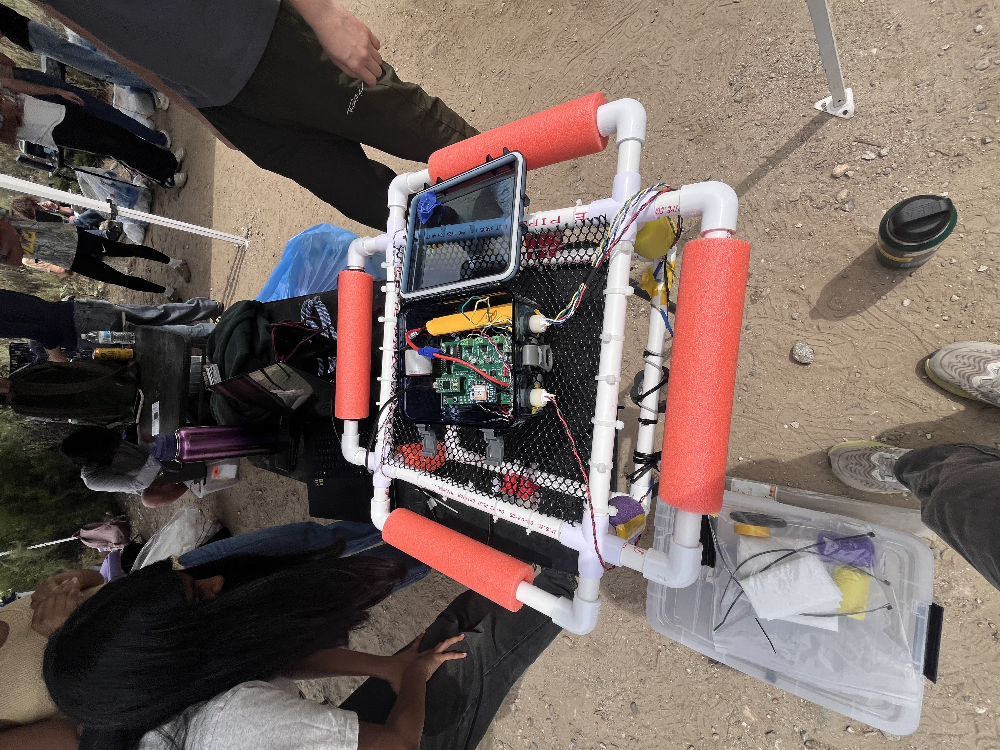
In this project, I collaborated in a 4-person engineering team to design, construct, and field-test an autonomous surface vehicle (ASV) to measure temperature, salinity and depth data at Dana Point Harbor in Southern California. We measured temperature using a thermistor, measured salinity using a custom conductivity probe and measured depth using a two part speaker and microphone sonar system.
Skills
Analog Circuitry, Breadboarding, Arduino C++, MATLAB
Goals
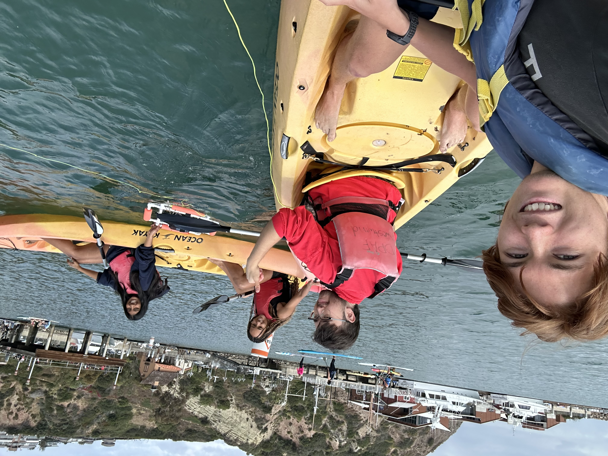
Our goals for this project were to:
- Design and integrate a group of sensors capable of measuring environmental factors in the ocean.
- Compare nearshore and offshore water measurements to identify environmental differences.
- Validate the accuracy of low-cost custom sensors against established ground truths.
Methods
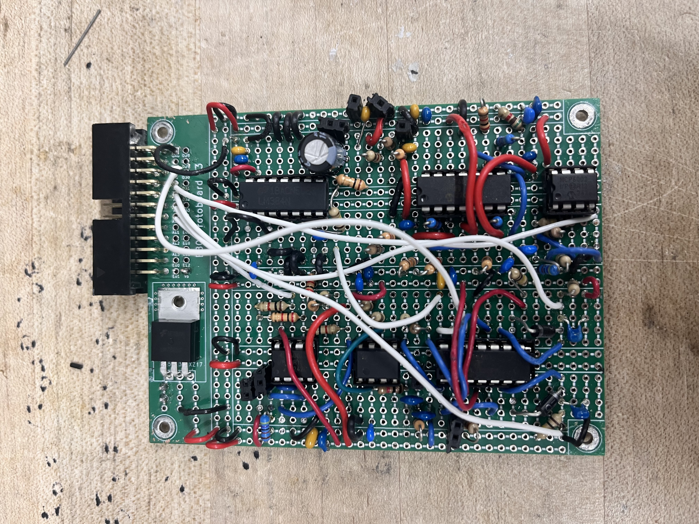
- Depth Measurement (Sonar): A waterproof speaker sent a 1 ms pulse (4kHz square wave) toward the ocean floor. An electret microphone captured the reflection, and the depth was calculated using the time-of-flight between the pulse and its echo alongside the speed of sound in seawater (1500 m/s).
- Salinity Measurement (Conductivity): A modified NEMA 1-15p wall plug acted as a probe to measure water resistance, which serves as a proxy for conductivity and salinity. To prevent corrosion, a 555 timer drove a 200Hz AC signal through the probe, and the resulting wave amplitude was processed via maximum and minimum voltage detectors.
- Temperature Measurement (Thermistor): A 47k thermistor was placed into a voltage divider circuit to convert temperature-dependent resistance changes into readable voltages. The output voltage was stabilized by a unity gain buffer and scaled by an inverting offset amplifier to match the input limits of the microcontroller.
- Data Logging and Processing: Data was captured via a Teensy microcontroller. Because the sonar echoes required high-frequency tracking, a specialized script was deployed to temporarily spike the sampling rate to ~200kHz for acoustic data, while default 10Hz sampling was used for temperature and salinity. Captured data was saved onto an SD card and analyzed using MATLAB and Excel.
- Sensor Calibration and Deployment: All custom sensors were calibrated using reference solutions, including explicit salt-to-water mass ratios for salinity and physical thermometer checks for temperature, to construct polynomial calibration curves. The integrated system was systematically validated in a controlled tank room and an athletic pool before being deployed at Dana Point Harbor.
Results
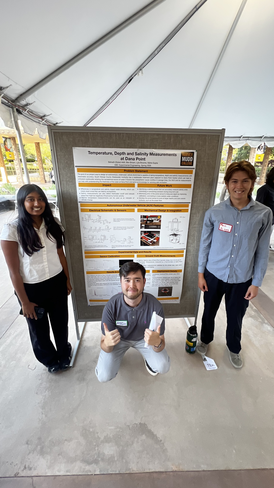
- Environmental Trends: Custom temperature data successfully mapped a cooling gradient as the vehicle traveled away from the shore, while salinity levels remained completely uniform across both shallow and deep waters.
- Seabed Realities: The sonar system worked perfectly in flat-bottomed testing pools but struggled in the open harbor, revealing that uneven rocky seafloors scatter acoustic echoes rather than reflecting them cleanly back to the receiver.
- Hands-on Engineering: I learned a lot about how environmental measurements are taken by designing and calibrating custom sensors from scratch.
- Future Upgrades: Upgrading to non-corrosive metals, adding GPS positioning, and using advanced digital filtering to isolate acoustic echoes from ambient harbor noise.
Read more
E190: Sustainability and Resiliency in the Built Environment
Florida Eco Resort Sustainability Masterplan — Spring 2026
In this project, I collaborated in a 3-person consulting team to engineer environmental adaptations and financial strategies for a 40-acre upscale coastal resort located in a high-risk flood zone.
Skills
Hydrological Modeling (EPA Storm Water Calculator), Financial Modeling, Life Cycle Cost Analysis (LCCA), Net Present Value (NPV) Analysis
Goals
Our goals were to:
- Mitigate flood and stormwater risks for a vulnerable 40-acre coastal hospitality property.
- Develop economically viable green transit and renewable energy infrastructure strategies.
- Design structural and mechanical defense frameworks against multi-hazard climate events.
Methods
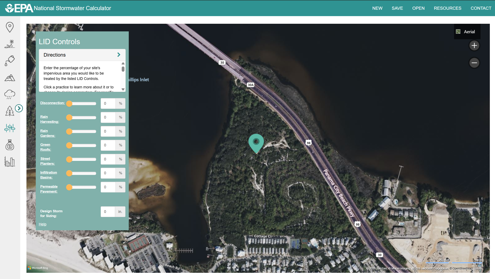
- Hydrological Modeling: Evaluated site-specific hydrology using the EPA's National Stormwater Calculator to simulate rainfall and soil characteristics.
- Green Infrastructure Design: Modeled low-impact development (LID) features, such as permeable pavement and bioswales, to capture and manage stormwater on-site.
- Financial Modeling: Built comprehensive Excel models to execute economic trade-off analyses, comparing long-term financial viability across competing transit and energy scenarios.
- Investment Metrics: Calculated Net Present Value (NPV), Internal Rate of Return (IRR), and capital payback periods to back up sustainable recommendations with hard fiscal data.
- Resilience Frameworks: Formulated structural safety guidelines specifying elevated mechanical infrastructure and continuous load-path hurricane strapping to withstand high-velocity wind events.
- Environmental Health: Integrated industrial-grade HEPA HVAC filtration specifications into the mechanical design to safeguard indoor air quality against airborne hazards.
Results
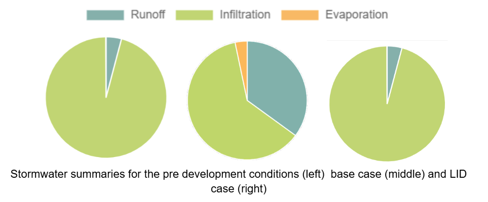
- Runoff Reduction: Proven LID infrastructure designs successfully cut baseline stormwater runnoff.
- Optimized Spending: Delivered a clear, data-driven roadmap to the client, pairing the most aggressive sustainability options with realistic payback timelines and positive NPV metrics.
- Unified Defense: Standardized the resort's disaster readiness by combining structural, mechanical, and environmental protections into a single, cohesive multi-hazard resilience manual.
Read more
E4: Intro to Engineering Design and Manufacturing
Compost Irrigation System — Fall 2025
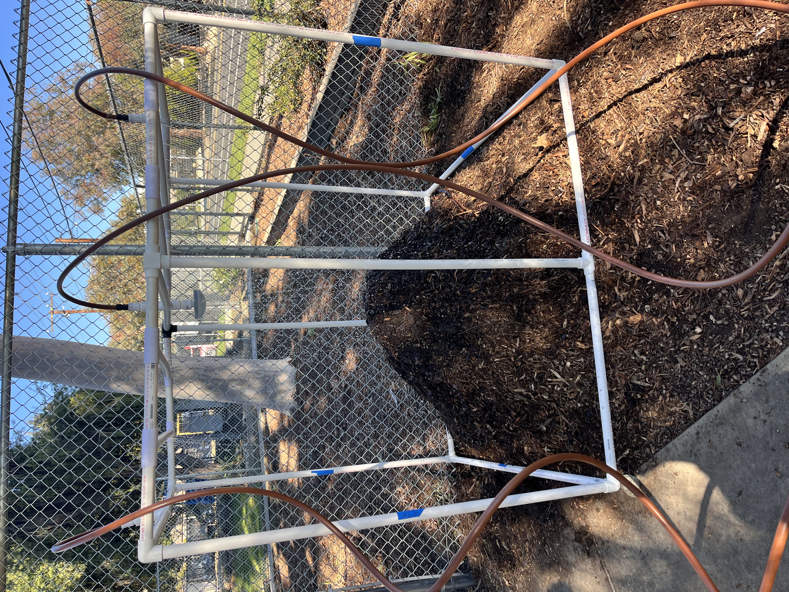
In this project, I worked in a 5-person engineering team to design, prototype, and test an automated irrigation system for Sustainable Claremont's 4-ft compost piles, significantly reducing labor time and improving water distribution efficiency.
Skills
SolidWorks CAD, 3D Printing, PVC Fabrication, Fluid Distribution Design, Client Relations
Goals
The goals of this project were to:
- Streamline the labor-intensive watering process for Sustainable Claremont's compost piles
- Optimize water efficiency by designing a watering mechanism that penetrates deep into a 4-foot organic mass.
- Manage the complete engineering design cycle from initial stakeholder constraints to a functional physical deliverable.
Methods
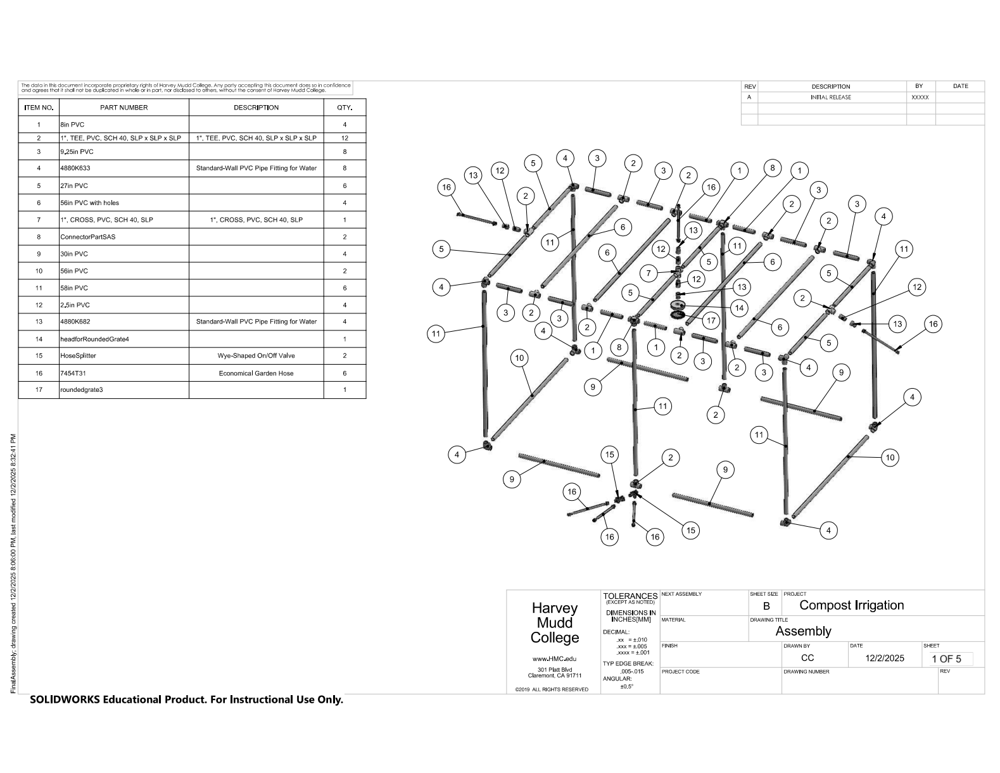
- CAD Modeling: Developed detailed 3D part assemblies and technical drawings within SolidWorks to plan the structural layout.
- Structural Fabrication: Hand-fabricated a lightweight, rugged PVC plumbing frame designed to withstand high-moisture outdoor field environments.
- Fluid Mechanism Design: Engineered and rapid-prototyped multiple iterations of a custom 3D-printed fluid distribution mechanism to uniformly disperse water throughout the pile.
- Iterative Prototyping: Conducted rapid build-and-test loops, utilizing physical fluid testing to tune flow rates and refine nozzle positioning based on hydraulic feedback.
- Project Management: Led regular client meetings, managed stakeholder expectations, and hosted structured formal design reviews to pitch design revisions.
Results
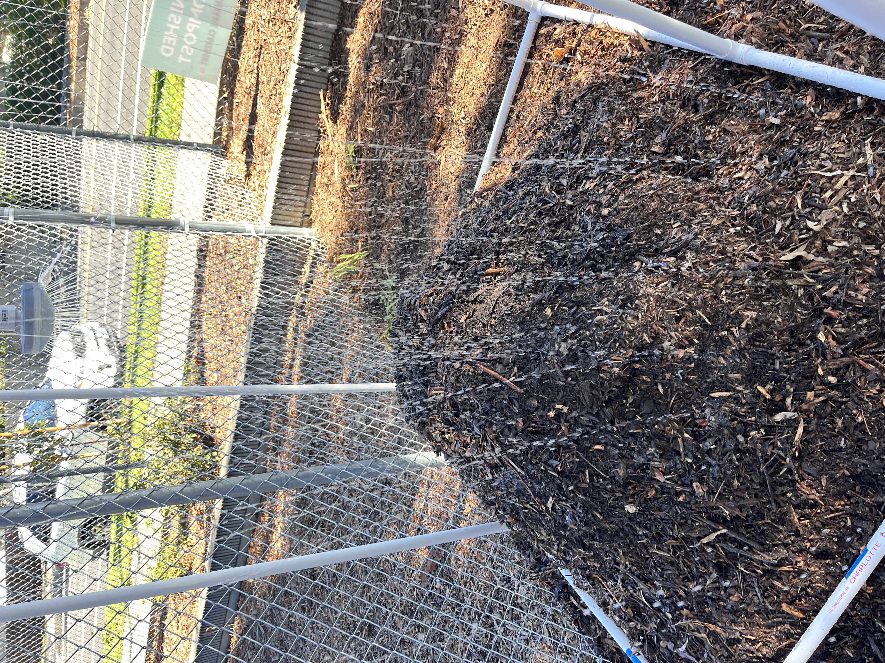
- Labor Efficiency: Successfully reduced manual watering time by approximately 2 hours per use, freeing up valuable volunteer resources.
- Resource Conservation: Measurably improved volumetric water efficiency, delivering targeted moisture directly to the bacterial core while minimizing surface runoff and evaporation.
- Client Adoption: Delivered a fully functional, user-friendly prototype directly to Sustainable Claremont, successfully meeting all community partner design criteria.
Read more
E4: Intro to Engineering Design and Manufacturing
Hammer Manufacturing Project — Fall 2025
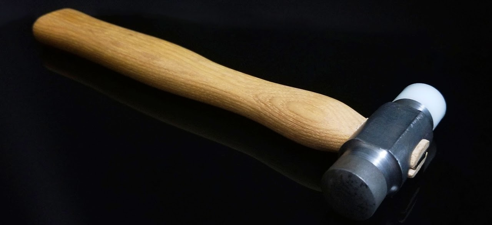
In this project I spent over 30 hours manufacturing a precision steel hammer to up to ±0.005 inch tolerance starting from raw stock. I became comfortable in the machine shop and gained experience using the manual lathe, vertical mill and sanding tools.
Skills
Manual Lathe, Vertical Mill, Geometric Dimensioning & Tolerancing (GD&T), Dimensional Control, Heat Treatment, Machining Workflow
Goals
- Develop foundational machine shop fluency and technical hands-on manufacturing competence.
- Interpret complex technical drawings and strictly adhere to tight geometric dimensioning tolerances.
- Master material transformation processes including stock cutting, precision material removal, and metallurgical hardening.
Methods
- Drawing Interpretation: Analyzed and decoded formal engineering drawings, mapping out sequential setups based on specified GD&T rules and datums.
- Lathe Operations: Operated a manual lathe to turn down cylindrical stock, face surfaces, and cut precise radii and shoulders for the hammer handle and head assemblies.
- Vertical Milling: Controlled a vertical mill to square stock, machine clean parallel faces, and drill or counterbore interlocking components within strict positional limits.
- Dimensional Control: Implemented continuous in-process metrology using digital calipers and micrometers to verify dimensions and maintain a tight tolerance up to ±0.005 inches.
- Thermal Processing: Executed heat treatment processes on the steel tool head, safely managing heating cycles and quenching media to optimize material hardness and durability.
Results
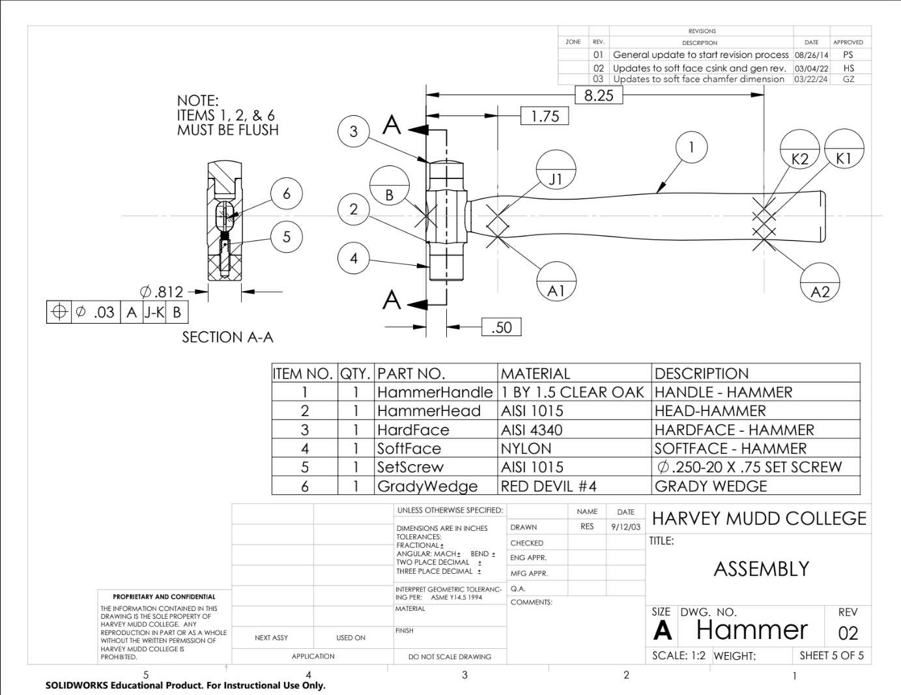
- High-Precision Assembly: Successfully fabricated a fully interlocking steel hammer meeting all dimensional inspection requirements and tight geometric limits.
- Process Execution: Logged 30+ hours of mistake-free manual machining time, demonstrating disciplined shop floor safety and equipment mastery.
- Manufacturing Foundations: Gained an intuitive understanding of manufacturability, learning firsthand how drawing dimensions and tolerancing choices translate directly to the physical machining process.
Read more
E79: Systems Engineering
Underwater Remotely Operated Vehicle (ROV) — Fall 2025
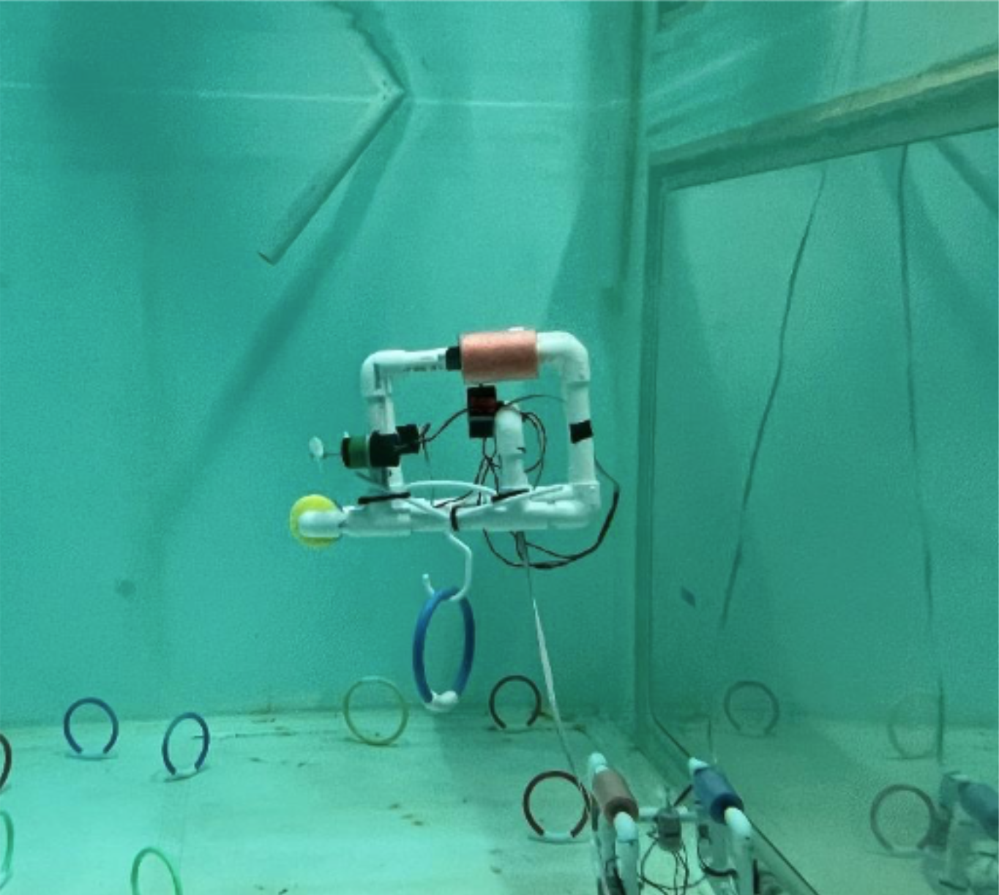
In this class project, I worked with a partner to design, waterproof, and field-test an underwater Remotely Operated Vehicle (ROV) to simultaneously measure temperature and depth data at the Robert J. Bernard Biological Field Station.
Skills
Analog Circuitry, Soldering, Breadboarding, LabVIEW, Control Systems (P Control), Oscilloscope Diagnostics
Goals
- Design and robustly waterproof an underwater vehicle capable of vertical diving and submersion.
- Develop custom electrical interfaces to reliably capture environmental data under changing water strata.
- Implement a closed-loop control system to achieve stable depth targeting and steady vertical transit.
Methods
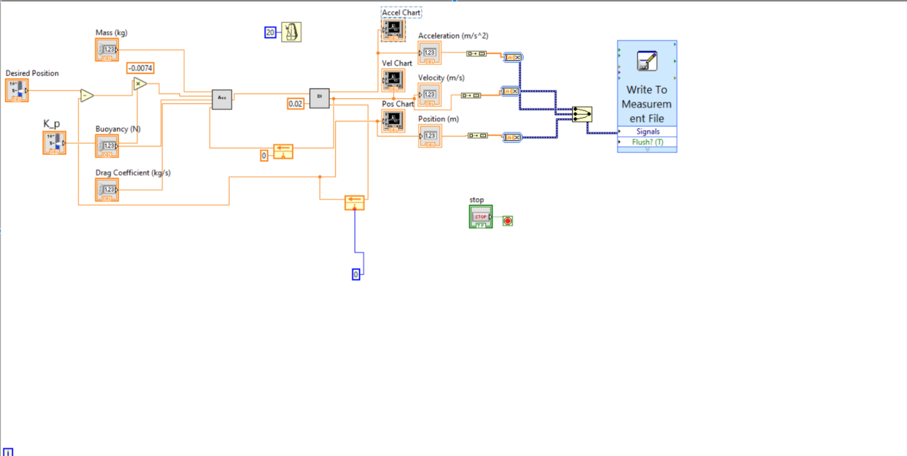
- Sensor Interface Development: Fabricated reliable hardware sensor interfaces by soldering an MPX5700 pressure sensor and an NXFT15XH103 thermistor directly to the project PCB.
- Prototyping & Diagnostics: Utilized hardware-in-the-loop breadboard prototyping and dual-channel oscilloscope diagnostics to troubleshoot noise and verify signal integrity before final assembly.
- Control System Programming: Programmed a Proportional (P) control loop in LabVIEW to automate motor actuation and manage vertical depth tracking.
- Dynamic Simulation: Modeled and simulated the vertical vehicle physics within LabVIEW, validating system performance by dynamically modulating motor PWM duty cycles.
- Field Testing & Deployment: Executed systematic waterproofing checks and deployed the integrated system into real-world field conditions at the biological field station.
Results
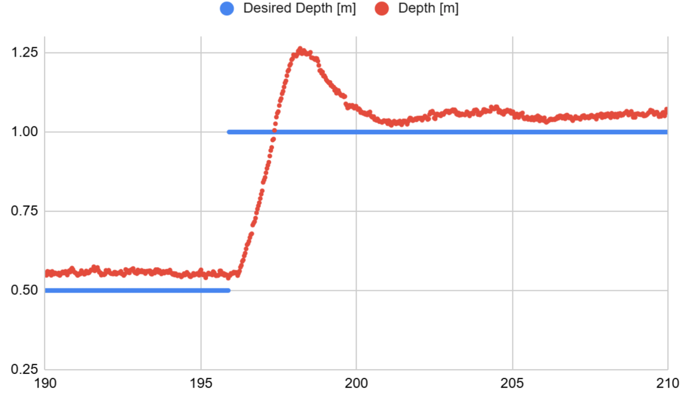
- Environmental Data Capture: Successfully gathered clean, reasonable depth and temperature profiles from the field station test site with zero water ingress.
- Depth Stability: Validated the motor control model, proving the LabVIEW P control loop effectively countered buoyant forces to hold targeted underwater depths.
- Systems Fluency: Gained hands-on competency across the full engineering cycle, bridging physical hydrodynamics, analog electronics, and real-time software controls.
Personal Project
Home PV System Project — Summer 2025
In this summer project, I performed a data-driven renewable energy feasibility assessment for a residential property in Kailua, HI, executing structural layout design, solar performance simulation, and a full techno-economic analysis.
Skills
QGIS (Geospatial Analysis), AutoCAD, NREL PVWatts, Techno-Economic Analysis, Financial Modeling, Carbon Accounting
Goals
- Assess the spatial, structural, and energetic viability of installing a rooftop solar PV system.
- Model the long-term financial lifecycle, capital payback milestones, and energy ROI of the array.
- Quantify the localized environmental offset and carbon reduction potential of shifting to renewable power.
Methods
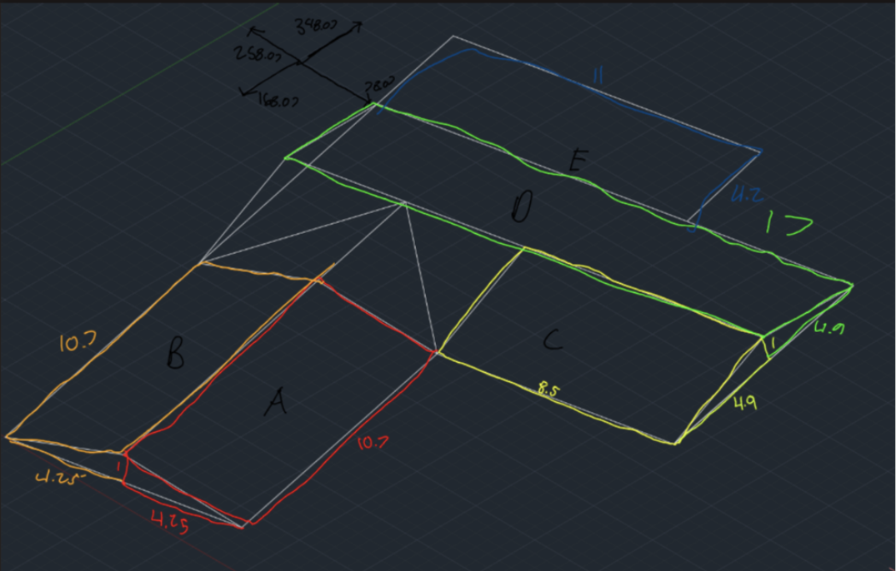
- Geospatial Data Extraction: Utilized QGIS to extract exact rooftop geometries, pitch angles, shading profiles, and spatial data from satellite and geographic layers.
- Structural Design: Developed precise AutoCAD structural models to optimize solar panel placement, layout spacing, and orientation for maximum solar irradiance capture.
- Performance Simulation: Simulated monthly and annual system energy production by feeding site-specific metrics into the NREL PVWatts calculator.
- Techno-Economic Modeling: Built a financial framework evaluating localized utility tier rates, upfront capital expenditures (CapEx), and operational costs to compute investment metrics.
- Environmental Impact Assessment: Conducted a carbon accounting analysis to calculate grid-displacement metrics and determine the exact environmental offset of the proposed system.
Results
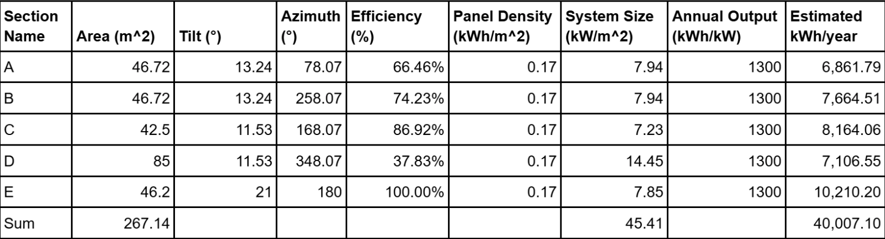
- Financial Feasibility: Proven economic viability with a highly attractive, optimized 6-year payback period followed by net-positive utility savings.
- Carbon Offset Metrics: Validated a significant environmental benefit, estimating a net annual reduction of 2,071 kg of CO₂ emissions.
- Deployment Readiness: Produced a robust, investment-grade feasibility report ready to serve as a blueprint for hardware procurement and permitting.
Read more